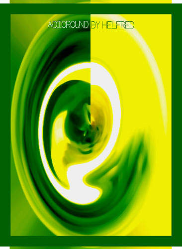

Helfred van Malkenhorst
Adioround
 |
|
|
|
(1 of 12) |
 |
|
|
|
(1 of 12) |
"After a few moments of tenderness and love between a bread-baker and a creative hairdresser Helfred was coming to the world. As a young Dutchy boy, he was always stimulated to do what his heart told him and to follow his feelings. Happily enough, he was able to never limit his mind. He started to enjoy the bakery world in the footsteps of his father and grand-fathers."But then he realized that early mornings are not his cup of tea so he started to learn and get exposure and experience in kitchens. Working in different hospitality environments from top restaurants, hotels up to big canteens, he gained great experience before he packed his suitcase. In 1995 his mind was set for Thailand, where he preferred to start from scratch and on a low budget. He immediately felt great respect for Thai culture, and he was even a monk for one month.
"Helfred has been involved in many hospitality levels, from canteen work, like at the United Nations, to chairman of the Thai Chefs Association, and assistant at the first two Bitec Hospitality shows, and promotions in Conrad Hotel. After been done some consultancy jobs, he invest in his own ideas, like his FreeHands Cutlery, and animation cooking show and now as founder in 'Five'.
"He is happy to work hard, be patient and always keep a positive spirit and mind. It is not always rose-water and champagne, but his strong mind and drive keeps him on the right track. Last year he's even discover that he has talented in art. Besides his creative cooking, designs and art Helfred can create as well great graphics for logos and names. He discover that he had an feeling for art and work on it when he's get his creative flows, his works are standing out like his mind an real artist in many ways, keep an eye on him!"
The Challenge for our Skill
Is the power and the will
To create and compose
The Feeling of our soul.Verse created by Chef Helfred (feb 2001)
Van Malkenhorst's family and bakery website